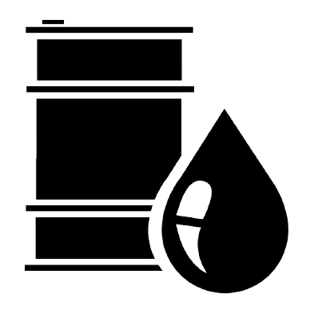

Energy Production Calculator


Coal
Coal is a solid fossil fuel formed by plant matter decomposing under the proper conditions, which can be burnt for electrical energy.

Oil
Oil is a liquid fossil fuel formed by tiny organic matter decomposing under the proper conditions, which can be burnt for electrical energy.
Gas
Natural gas is a solid fossil fuel formed by microscopic organic matter decomposing under the proper conditions, which can be burnt for electrical energy.
Solar
Solar energy is created by using photovoltaic cells in solar panels to convert direct sunlight to electrical energy.
Wind
Large turbines are installed in windy locations which spin and turn a generator which generates electrical energy.
Hydro
Turbines are installed in areas with waterflow like dams or rivers that spin and turn a generator to create electrical energy.